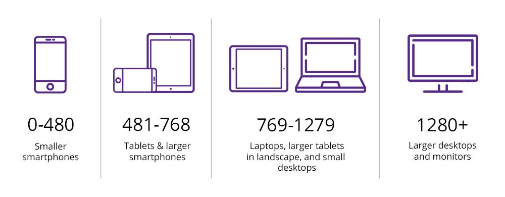

Media size depends on your device size.
INFORMATION.
The @media rule, introduced in CSS2, made it possible to define different style rules for different media types.
Media queries in CSS3 extended the CSS2 media types idea: Instead of looking for a type of device, they look at the capability of the device.
Media queries can be used to check many things, such as:
width and height of the viewport
orientation of the viewport (landscape or portrait)
resolution
Using media queries are a popular technique for delivering a tailored style sheet to desktops, laptops, tablets, and mobile phones (such as iPhone and Android phones).
